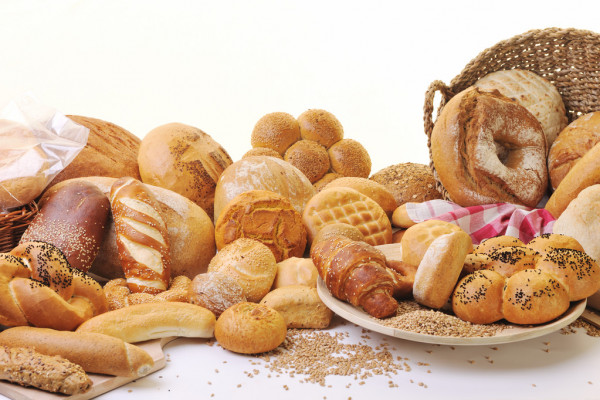
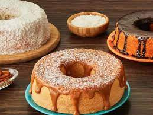

O melhor de nossos pães e bolos pra você
Desde 2001, o lugar mais gostoso da cidade

Temos um processo de fabricação 100% caseiro. Esse foi um dos maiores motivos que fizeram com que a Padaria Souza crescesse com as proporções que temos hoje. Temos um pão único de pura qualidade.
Uma viagem para Itália nos fez conhecer alguns ingredientes que são essenciais para que a massa do bolo fique macia gostosa. Hoje temos um produto incomparável.
Estamos localizado na Rua do Peixe, 700
Nosso Telefone: (11)2555-7979
Estamos funcionando nos seguintes horários:
Segunda à Sexta: 7:00 ás 16:00
Sábados e Domingos: 7:00 ás 13:00
Feriados: 8:00 ás 12:00